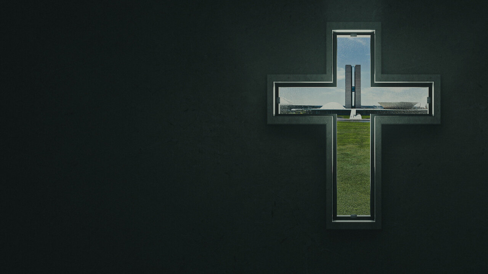
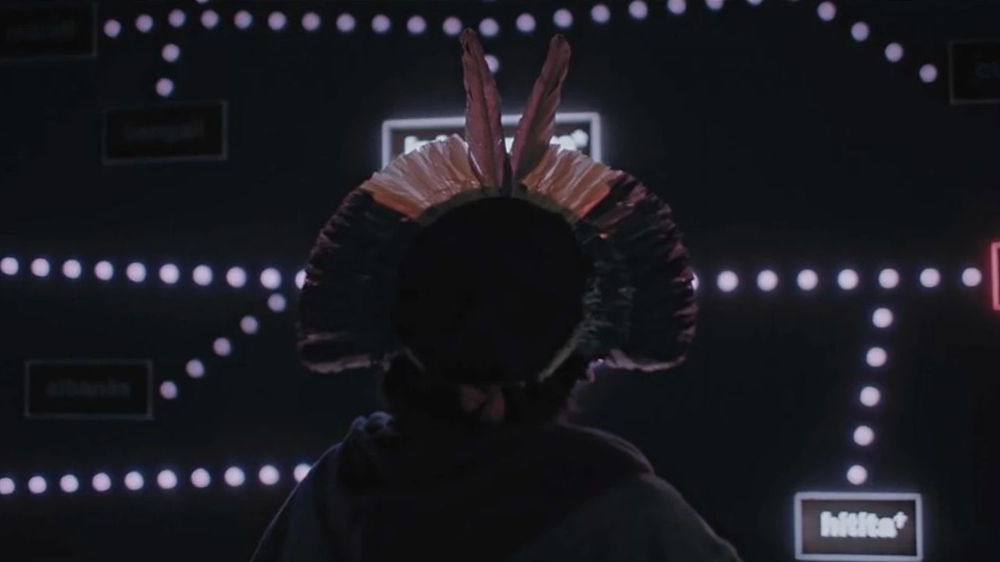
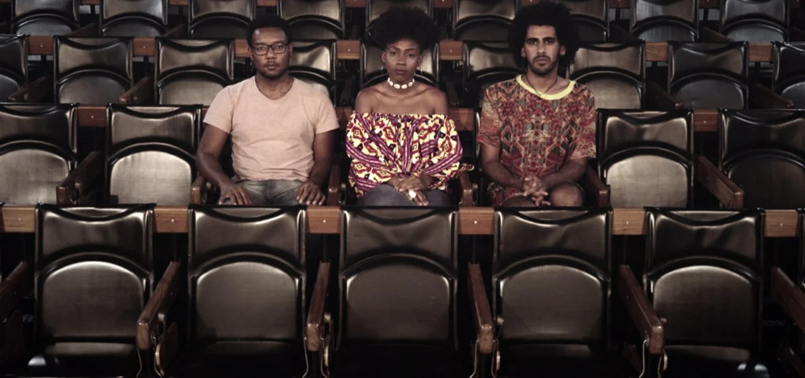
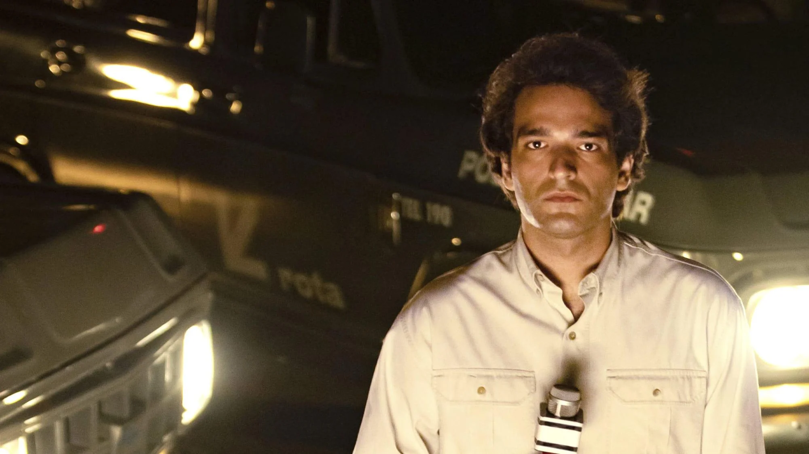
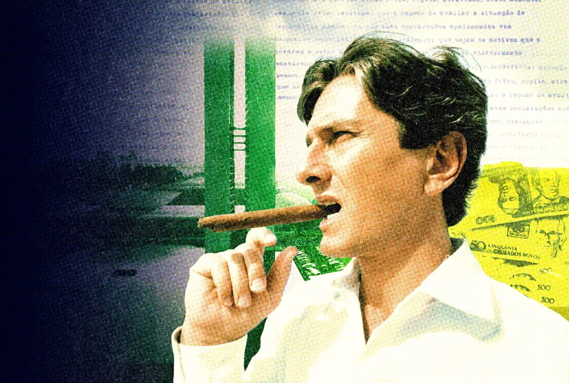
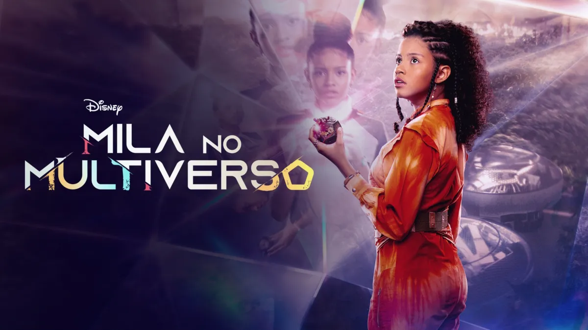
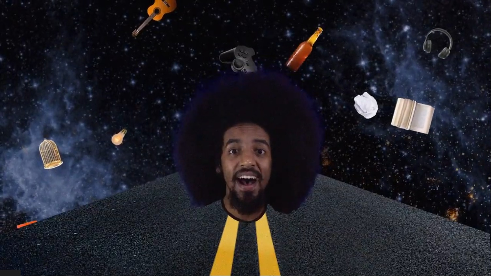
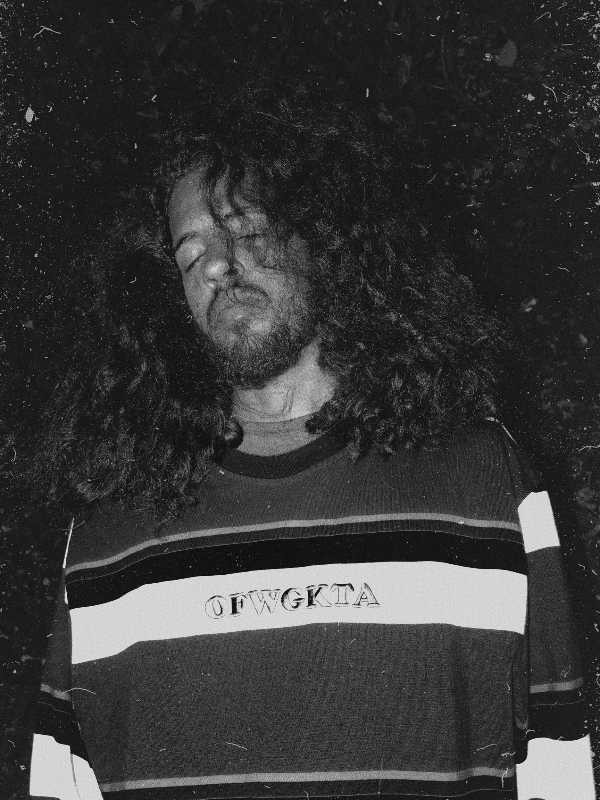

Assistente de Edição
Portfólio

Apocalipse nos Trópicos
Longa · Ass. Finalização · 2025 · Petra Costa
Nossa Pátria Está Onde Somos Amados
Longa · Ass. Finalização · 2023 · Felipe Hirsch
Quebrando O Tabu
Série Doc · Ass. Finalização · 2019 · Guilherme Melles
Rota 66
Série Fic — Ass. Finalização / Ass. Montagem — 2022 — Philippe Barcinski
Caçador de Marajás
Série Doc · Ass. Montagem · 2025 · Charly BraunSociedade do Cansaço
Série Doc · Ass. Finalização · 2021 · Patrick Hanser
Mila no Multiverso
Série Doc · Ass. Montagem · 2023 · Júlia Jordão
Boticário
Publi · Ass. Finalização · 2022
Urbymen
Publi · Ass. Finalização · 2021 · Rodrigo Gameiro
Marcos Wilder
Clipe · Montagem · 2022 · Marcos Wilder
BIO
PLANK T. PUNK
Plank T.Punk é pós-produtor e criador do coletivo Somnar, além de colaborador do projeto Ramo. Nascido em Diadema (SP), iniciou sua trajetória em projetos periféricos, construindo uma base sólida no audiovisual.
Ao longo da carreira, colaborou com produtoras como Boutique Filmes, Licor, Cavalo Marinho, Café Royal e Busca Vida.
Entre seus trabalhos de destaque estão Apocalipse nos Trópicos, Rota 66, Quebrando o Tabu e Caçador de Marajás.
Contato